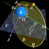

orbital_speed

Definition: In gravitationally bound systems, the orbital speed of an astronomical body or object (e.g. planet, moon, artificial satellite, spacecraft, or star) is the speed at which it orbits around either the barycenter or, if one body is much more massive than the other bodies of the system combined, its speed relative to the center of mass of the most massive body.
Source: Wikipedia
Wikipedia Page
Wikidata Page